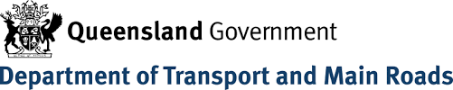
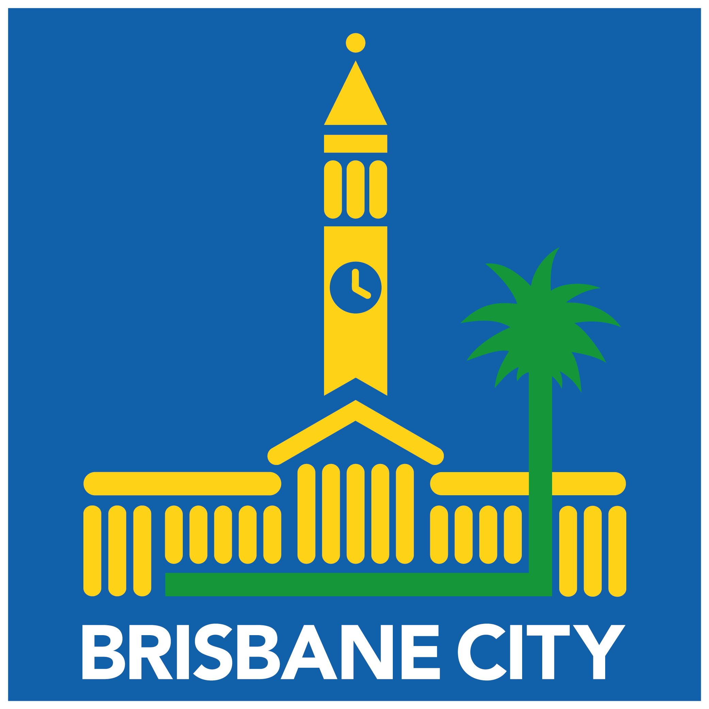
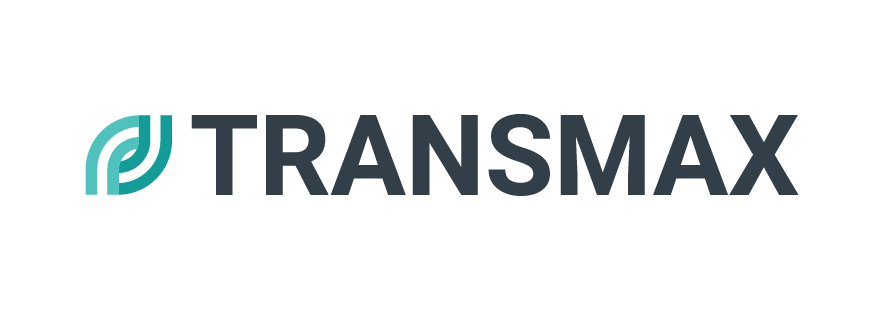
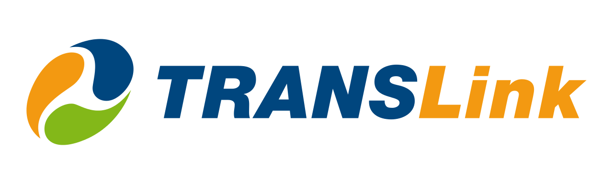
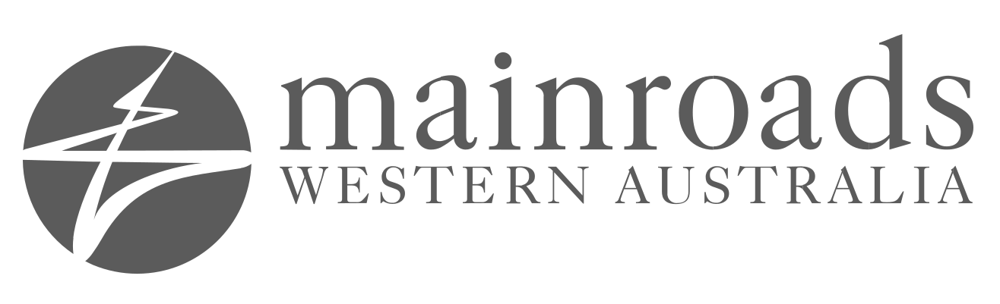
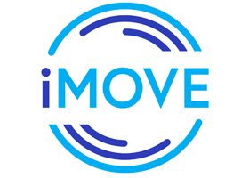
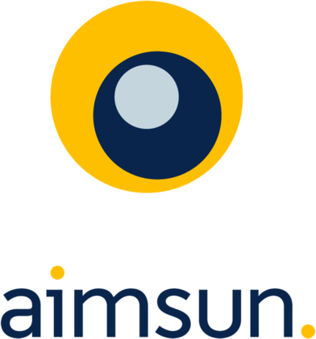

Partners and collaborators








The bridge between transport research and live network operations, building the data, algorithms, and decision support that let operators run a network that is smarter at every step.






